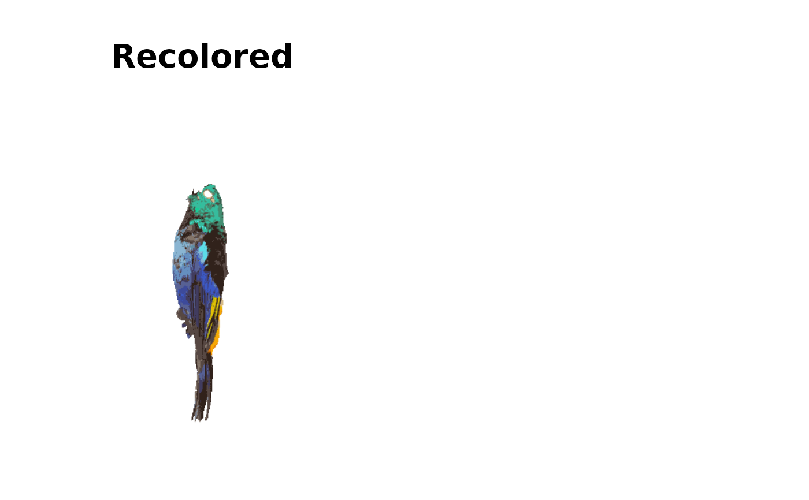
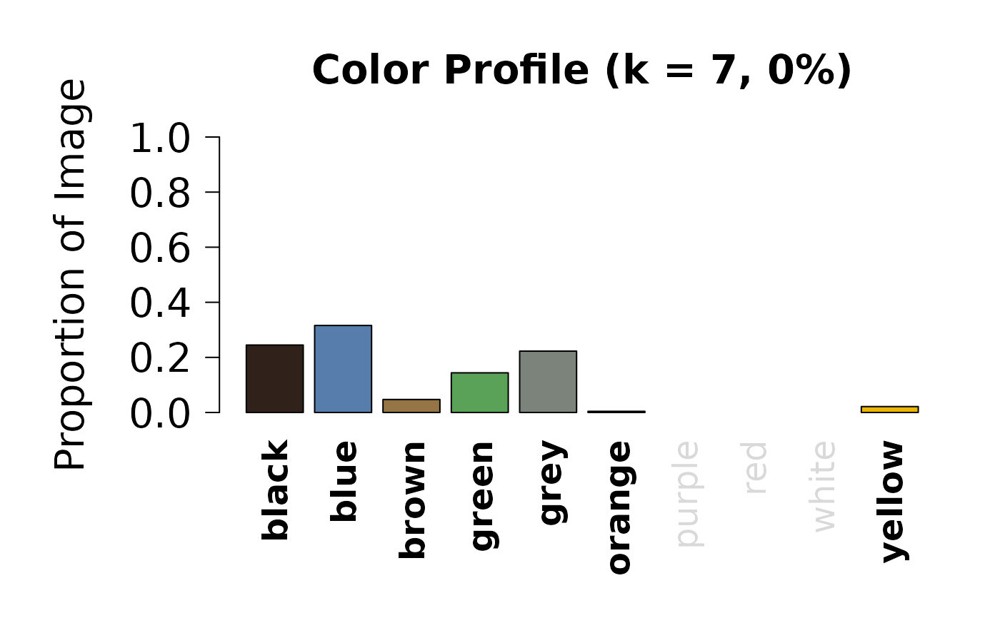

This function creates visualizations of color classification results from a charisma analysis. It can display the original image, recolored image, masked image, color proportions, and pavo color pattern geometry results.
Usage
# S3 method for class 'charisma'
plot(
x,
plot.all = TRUE,
plot.original = FALSE,
plot.recolored = FALSE,
plot.masked = FALSE,
plot.props = FALSE,
plot.pavo.img = FALSE,
plot.pavo.classes = FALSE,
font.size = 1.75,
props.x.cex = 1.5,
real.bar.colors = TRUE,
...
)Arguments
- x
- plot.all
Logical. If
TRUE, plots all available visualizations. Default isTRUE.- plot.original
Logical. If
TRUE, plots the original image. Default isFALSE.- plot.recolored
Logical. If
TRUE, plots the recolored image showing discrete color classifications. Default isFALSE.- plot.masked
Logical. If
TRUE, plots the masked image after background removal. Default isFALSE.- plot.props
Logical. If
TRUE, plots a bar chart showing the proportion of pixels in each color category. Default isFALSE.- plot.pavo.img
Logical. If
TRUE, plots the image used for pavo color pattern geometry analysis. Default isFALSE. Only available if pavo analysis was performed.- plot.pavo.classes
Logical. If
TRUE, plots the color palette from pavo k-means clustering. Default isFALSE. Only available if pavo analysis was performed.- font.size
Numeric. Size multiplier for plot text elements. Default is
1.75.- props.x.cex
Numeric. Size multiplier for x-axis labels in the proportions plot. Default is
1.5.- real.bar.colors
Logical. If
TRUE, uses actual color values for bars in the proportions plot. IfFALSE, uses a default color scheme. Default isTRUE.- ...
Additional arguments (currently not used).
Details
When plot.all = TRUE, all available plots are displayed in a
multi-panel layout. Individual plots can be selected by setting the
corresponding plot.* parameters to TRUE.
The function automatically detects whether pavo analysis results are present in the charisma object and adjusts the plot layout accordingly.
Examples
# \donttest{
# Run charisma on an image
img <- system.file("extdata", "Tangara_fastuosa_LACM60421.png",
package = "charisma")
result <- charisma(img)
#> Warning: if any are empty, remove them
#> Discrete color classes identified: k=7
#> (black, blue, brown, green, grey, orange, yellow)
#> Image classification in progress...
#> Using single set of coldists for all images.
#>
# Plot all results
plot(result)
#> Error in par(oldpar): invalid value specified for graphical parameter "pin"
# Plot only original and recolored images
plot(result, plot.all = FALSE, plot.original = TRUE, plot.recolored = TRUE)

# Plot color proportions
plot(result, plot.all = FALSE, plot.props = TRUE)

# }